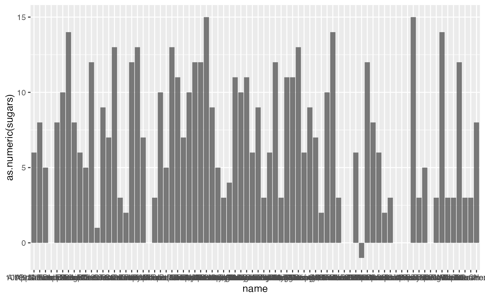
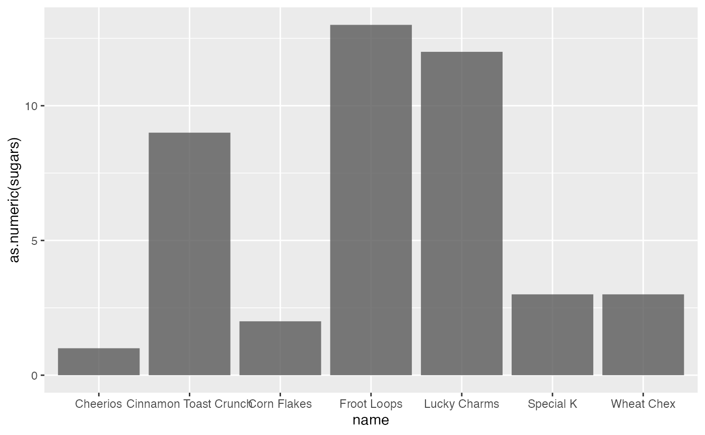
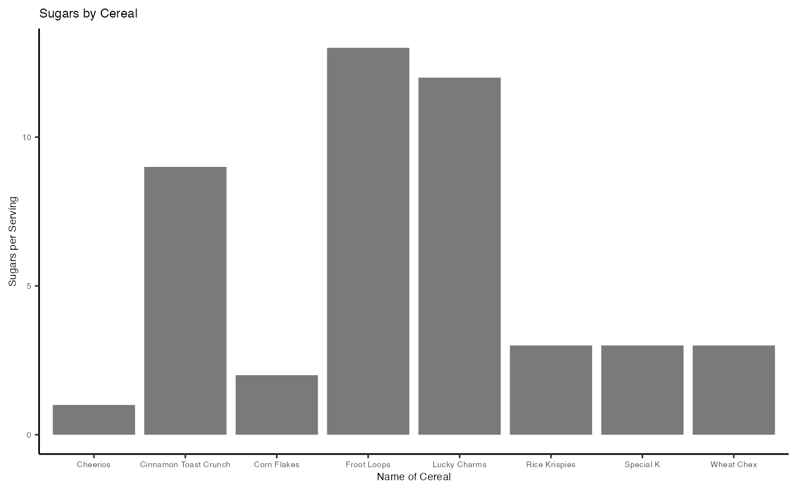
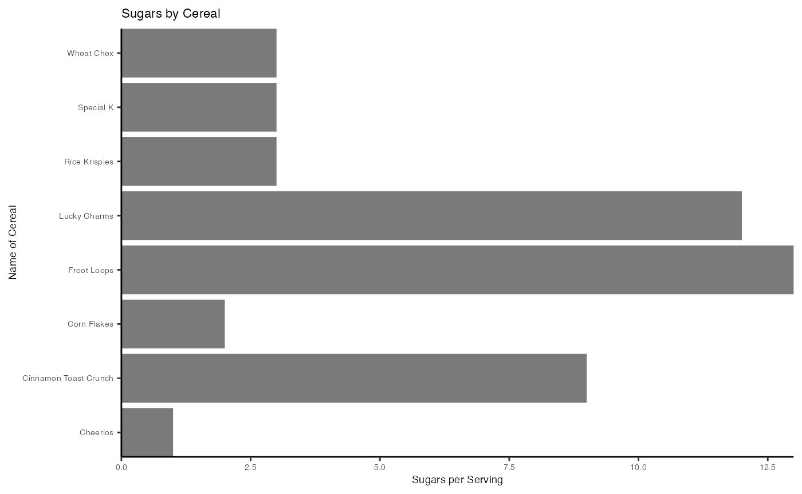

Cereal_Vignette
Sherise Immanuela
2023-05-04
Cereal_Vignette.Rmd
library(dfapply)
library(tidyverse)
#> ── Attaching packages ─────────────────────────────────────── tidyverse 1.3.2 ──
#> ✔ ggplot2 3.4.0 ✔ purrr 1.0.0
#> ✔ tibble 3.1.8 ✔ dplyr 1.0.10
#> ✔ tidyr 1.2.1 ✔ stringr 1.5.0
#> ✔ readr 2.1.3 ✔ forcats 0.5.2
#> ── Conflicts ────────────────────────────────────────── tidyverse_conflicts() ──
#> ✖ dplyr::filter() masks stats::filter()
#> ✖ dplyr::lag() masks stats::lag()
library(dplyr)Introducing ggplot2
The ggplot2 package is built on the principles of “The Grammar of Graphics”. ggplot2 provides a simple and intuitive method for presenting data by allowing you to specify the variables and aesthetics that you want to use. To use ggplot2, you first start by calling ggplot(), then you specify the dataset you want to use, and finally you add layers to the plot by indicating the specific aesthetic that you want to display. This process makes it easy to create custom visualizations in R.
Example
The cereal dataset contains nutrition information for 77 breakfast
cereals and includes 16 variables, such as name (name of
cereal), mfr (manufacturer), calories
(calories per serving), sugar (grams of sugars), etc.
library(readr)
cereal <- read_delim("cereal.csv",
delim = ";", escape_double = FALSE, trim_ws = TRUE)
#> Rows: 78 Columns: 16
#> ── Column specification ────────────────────────────────────────────────────────
#> Delimiter: ";"
#> chr (16): name, mfr, type, calories, protein, fat, sodium, fiber, carbo, sug...
#>
#> ℹ Use `spec()` to retrieve the full column specification for this data.
#> ℹ Specify the column types or set `show_col_types = FALSE` to quiet this message.
glimpse(cereal)
#> Rows: 78
#> Columns: 16
#> $ name <chr> "String", "100% Bran", "100% Natural Bran", "All-Bran", "All-…
#> $ mfr <chr> "Categorical", "N", "Q", "K", "K", "R", "G", "K", "G", "R", "…
#> $ type <chr> "Categorical", "C", "C", "C", "C", "C", "C", "C", "C", "C", "…
#> $ calories <chr> "Int", "70", "120", "70", "50", "110", "110", "110", "130", "…
#> $ protein <chr> "Int", "4", "3", "4", "4", "2", "2", "2", "3", "2", "3", "1",…
#> $ fat <chr> "Int", "1", "5", "1", "0", "2", "2", "0", "2", "1", "0", "2",…
#> $ sodium <chr> "Int", "130", "15", "260", "140", "200", "180", "125", "210",…
#> $ fiber <chr> "Float", "10", "2", "9", "14", "1", "1.5", "1", "2", "4", "5"…
#> $ carbo <chr> "Float", "5", "8", "7", "8", "14", "10.5", "11", "18", "15", …
#> $ sugars <chr> "Int", "6", "8", "5", "0", "8", "10", "14", "8", "6", "5", "1…
#> $ potass <chr> "Int", "280", "135", "320", "330", "-1", "70", "30", "100", "…
#> $ vitamins <chr> "Int", "25", "0", "25", "25", "25", "25", "25", "25", "25", "…
#> $ shelf <chr> "Int", "3", "3", "3", "3", "3", "1", "2", "3", "1", "3", "2",…
#> $ weight <chr> "Float", "1", "1", "1", "1", "1", "1", "1", "1.33", "1", "1",…
#> $ cups <chr> "Float", "0.33", "1", "0.33", "0.5", "0.75", "0.75", "1", "0.…
#> $ rating <chr> "Float", "68.402973", "33.983679", "59.425505", "93.704912", …Creating a barplot
This vignette will focus on showing the features in the geom_bar function in ggplot2.
A bar plot is a type of chart that represents categorical data with rectangular bars, where the length of each bar is proportional to the value it represents. A bar plot is useful when you want to compare the values of different categories or groups.
Here, we are creating a basic bar plot showing sugar levels of all the cereal brands in the dataset.
cereal |>
ggplot(mapping = aes(x = name , y = as.numeric(sugars))) +
geom_bar( stat = "identity", alpha = .8)
#> Warning in FUN(X[[i]], ...): NAs introduced by coercion
#> Warning in FUN(X[[i]], ...): NAs introduced by coercion
#> Warning: Removed 1 rows containing missing values (`position_stack()`).
As you can see, there are way too many cereal brands and the names overlap with each other. In the next code chunk, we’ll make the same plot but after filtering the dataset to include just some of the most popular cereal brands.
cereal |>
filter(name %in% c("Cheerios", "Cinnamon Toast Crunch","Corn Flakes", "Lucky Charms", "Rice
Krispies","Froot Loops", "Special K", "Wheat Chex")) |>
ggplot(mapping = aes(x = name , y = as.numeric(sugars))) +
geom_bar( stat = "identity", alpha = .8)
In the next code chunk, we’ll create better labels and a title for the plot.
cereal |>
filter(name %in% c("Cheerios", "Cinnamon Toast Crunch","Corn Flakes", "Lucky Charms", "Rice Krispies","Froot Loops", "Special K", "Wheat Chex")) |>
ggplot(mapping = aes(x = name , y = as.numeric(sugars))) +
geom_bar( stat = "identity", alpha = .8) +
theme_classic() +
theme(text = element_text(size=7)) +
labs(title = "Sugars by Cereal",
x = "Name of Cereal",
y = "Sugars per Serving" )
We can also try to flip the coordinates in the plot.
cereal |>
filter(name %in% c("Cheerios", "Cinnamon Toast Crunch","Corn Flakes", "Lucky Charms", "Rice Krispies","Froot Loops", "Special K", "Wheat Chex")) |>
ggplot(mapping = aes(x = name , y = as.numeric(sugars))) +
geom_bar( stat = "identity", alpha = .8) +
theme_classic() +
theme(text = element_text(size=7)) +
labs(title = "Sugars by Cereal",
x = "Name of Cereal",
y = "Sugars per Serving" ) +
coord_flip(xlim = NULL, ylim = NULL, expand = FALSE, clip = "on") 